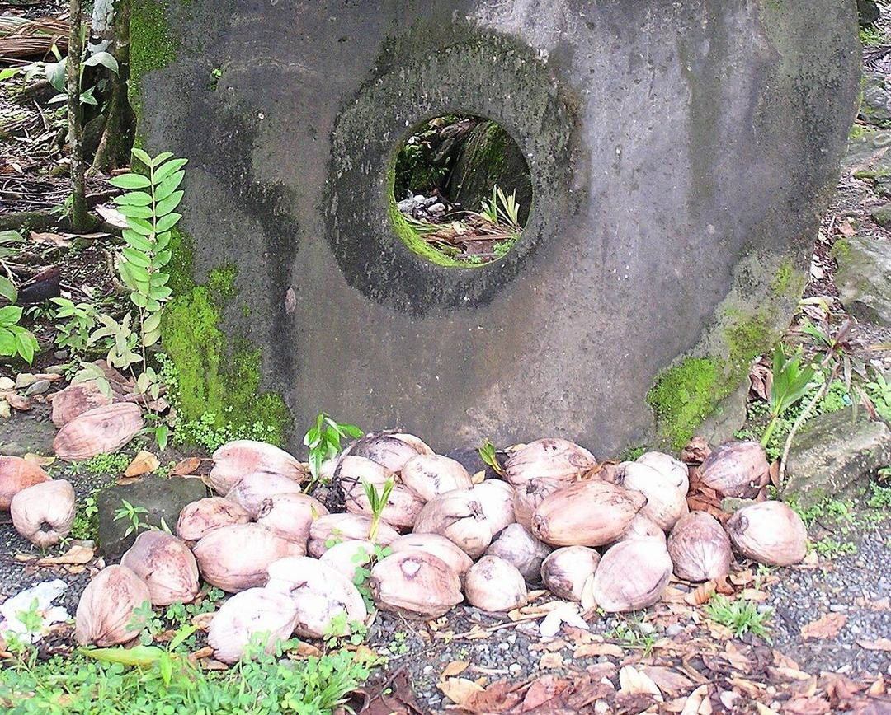
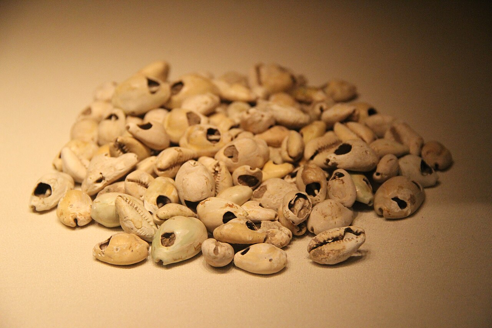
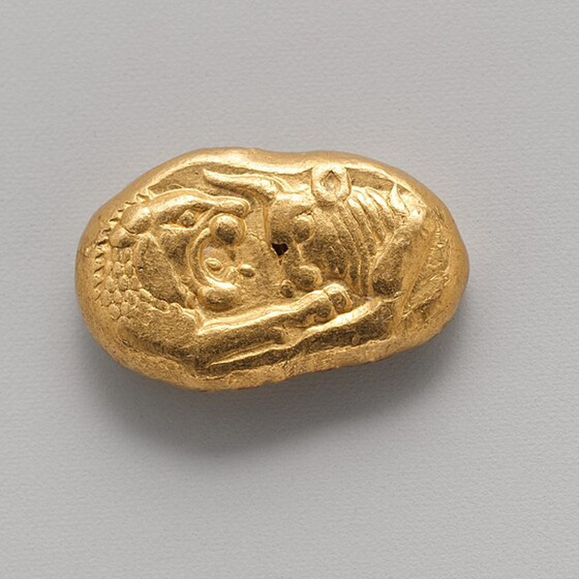
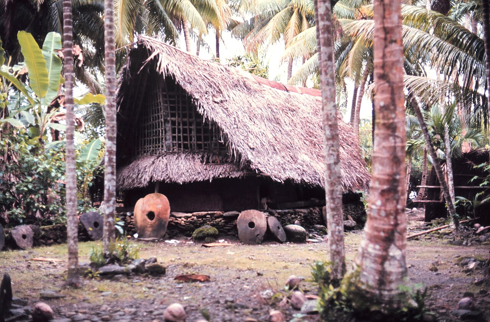
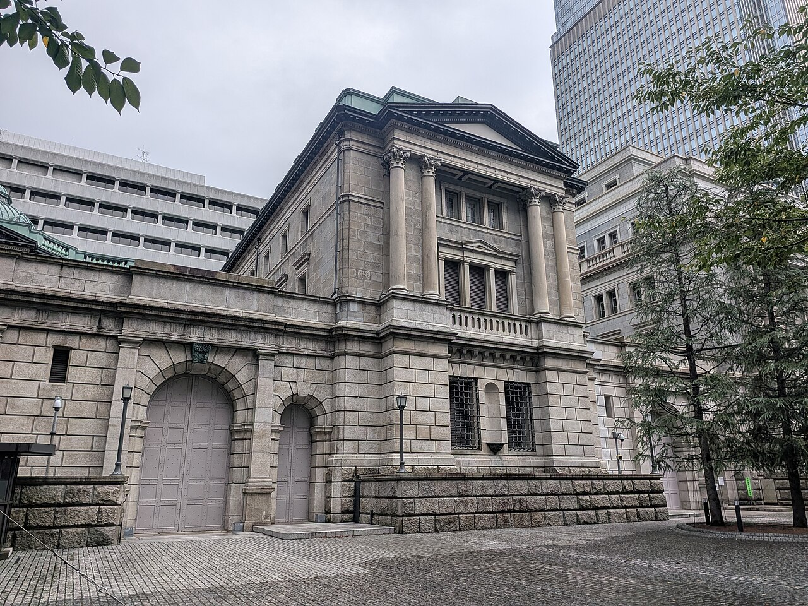
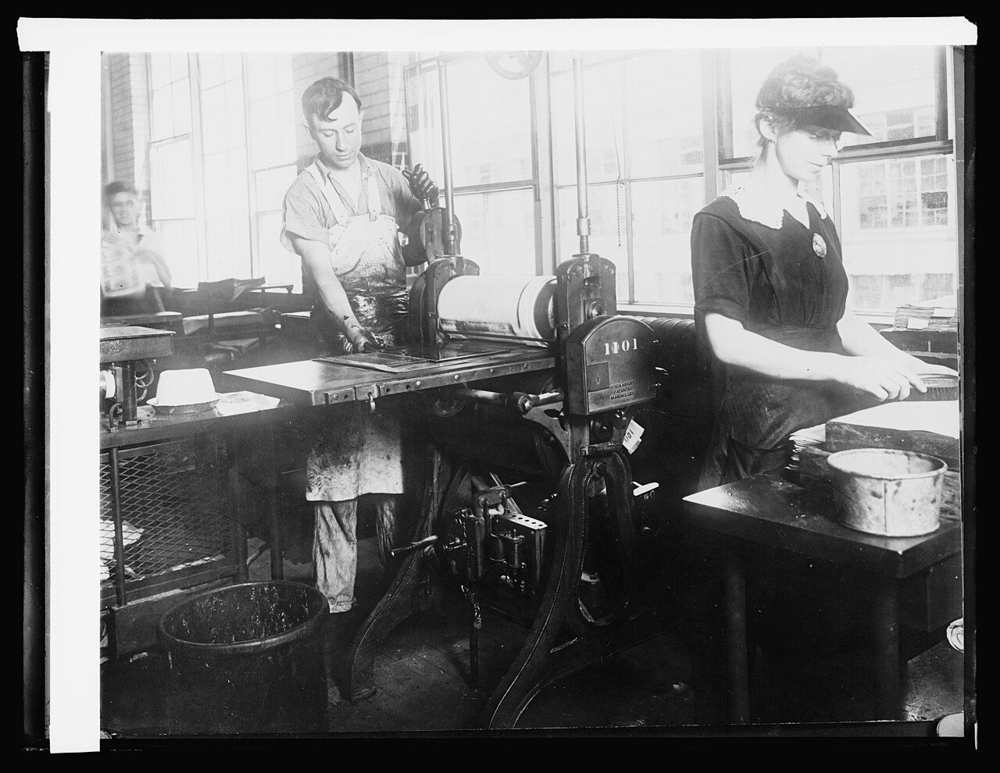
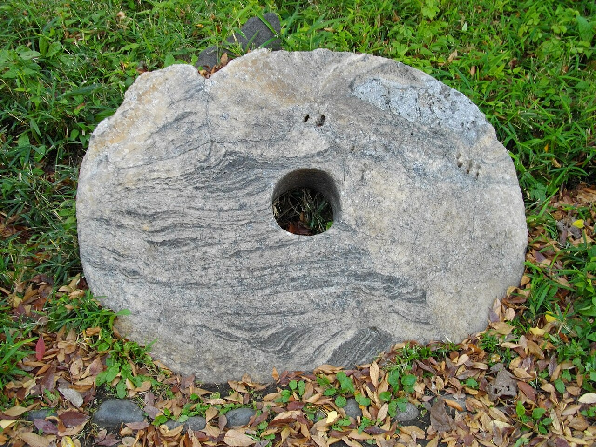

アメリカでお札を出しているのは、連邦準備制度（FRB）という国の銀行です。その2025年の予算によると、100ドル札を1枚刷るのにかかる紙やインク、人手などの費用は、11.3セント（1ドルは100セント）。額面のおよそ900分の1です。
日本でも、2025年の大みそかに世の中に出回っていたお札は183.2億枚、合わせて120.6兆円でした。国民1人あたりにすると、およそ100万円分です。どれも、もとは紙とインクです。ただの紙が、なぜお金として使えるのでしょう。

お札は紙とインクでできているのに、なぜ物と取りかえてもらえるのでしょう。貝や石のお金からいまのお札まで、流れ図と棒グラフでたどり、最後は海の底に沈んだお金の話へ。紙がお金になる「からくり」を、のぞいてみませんか。
アメリカでお札を出しているのは、連邦準備制度（FRB）という国の銀行です。その2025年の予算によると、100ドル札を1枚刷るのにかかる紙やインク、人手などの費用は、11.3セント（1ドルは100セント）。額面のおよそ900分の1です。
日本でも、2025年の大みそかに世の中に出回っていたお札は183.2億枚、合わせて120.6兆円でした。国民1人あたりにすると、およそ100万円分です。どれも、もとは紙とインクです。ただの紙が、なぜお金として使えるのでしょう。
次の人も受け取るとみんなが信じ、国がそれを支えているから。
魚を持っている人が靴をほしくても、靴屋が魚をほしいとは限りません。物と物をそのまま取りかえるのは不便です。そこで、多くの人がほしがる物が、取りかえの仲立ちになりました。
3,000年以上前の中国では、インド洋でとれる子安貝（タカラガイ）がお金として使われました。「貨」「財」「買」に「貝」が入っているのは、そのなごりです。
やがて金属のお金も生まれます。前6世紀、いまのトルコ西部にあったリディア王国で、金の混ざりぐあいをそろえた金貨が作られたとされます。重さと質がそろっていれば、いちいち量らずに使えます。


太平洋のヤップ島（いまのミクロネシア連邦）には、石のお金「ライ」があります。約400km離れたパラオの島で石灰岩を切り出し、舟で運んだものです。最大のものは直径3.6m、重さは4トンもあります。
貝も金も石も、手に入れるのに手間がかかり、数にかぎりがありました。だからこそ、みんなが値打ちを認めたのです。

けれども、重い金属を持ち歩くのはたいへんです。世界史の流れ第16話で見た宋の交子（こうし）も、重い鉄の銭を預けた証文から始まりました。
17世紀のロンドンでは、金細工の職人が人々の金を預かり、名前と金額を書いた受取証を渡しました。やがて受取証そのものが支払いに使われるようになり、お札のもとになります。
子どもが親にあげる「肩たたき券」を思い出してください。紙そのものには値打ちがなくても、書いた人が約束を守ると信じられるから、券として通じます。昔のお札も、これと同じ「引きかえ券」でした。
日本で最初の日本銀行のお札（1885年）も、銀や金と取りかえられる「兌換（だかん）券」でした。兌換とは、引きかえること。お札の値打ちを、金庫の金が支えていました。

1929年に世界恐慌（世界じゅうに広がった大不況）が起こると、各国は金とお札の結びつきを手放していきます。日本は1931年12月に金との交換をやめ、金の量とは関係なくお札を出すしくみに移っていきました。
では、いまのお札を支えているのは何でしょう。作る費用を見ると、紙の値打ちでないことははっきりします（Fig.02）。

いちばんの支えは、「次の人も、このお札を受け取ってくれる」という、みんなの信用だと説明されます。お店がお札を受け取るのは、それで仕入れや給料を払えるからです。受け取った人も、また別の店で使えます（Fig.03）。
国も、その輪を支えています。日本銀行法は、日本銀行のお札が「法貨」として無制限に通用する（硬貨は1種類20枚まで）と定めています。法貨とは、支払いで受け取りを断れないお金のこと。税金も円で納めるので、だれもが円を必要とする、という見方もあります。
もう1つの支えが、偽札を作らせない技術です。2024年の新しいお札には、肖像が回って見えるホログラムが入りました。財務省によると、銀行券への採用は世界初です。
昔のお金は、貝や金そのものに値打ちがありました。次に紙は「金と引きかえる約束」になり、いまはみんなの信用と、法律や技術で守られた約束がお札を支えています。
ただ、金という重しが外れたお札は、刷ろうと思えばいくらでも増やせます。お金の量が増えすぎたら、物の値段はどうなるのでしょう。そのお話は、この特集の次の記事で。
1885年からの日本銀行券56種類のうち、25種類はいまもお店で使える日本銀行による
硬貨が法貨として通用するのは、1種類につき一度に20枚まで。お札は何枚でも通貨の単位及び貨幣の発行等に関する法律 第7条
一万円券の平均の寿命。紙は傷んで入れかわっても、信用は引きつがれる日本銀行による
ヤップ島の大きな石のお金は、重くて動かすと割れるおそれもあるため、持ち主が替わっても、ふつうは置き場所を変えません。だれの石かは、島の人々が語り伝える「その石がだれからだれへ渡ったかの話」で決まり、取り引きはその話に書き足されていきました。
あるとき、舟で運んでいた大きな石が、海に落ちて沈んでしまいます。石は二度と見つかりませんでした。ところが、みんなが「石はまだ海の底にある」と認めたので、見えない石が、ほかの石と同じようにお金として取り引きされ続けたと伝えられています。
お金の値打ちを決めていたのは、石そのものより、みんなの記憶と約束だったわけです。紙のお札が使えるのも、同じしくみの上にあります。
東京の日比谷公園には、ヤップ島の石のお金が1つ置かれています。近くを歩いたら、のぞいてみてください。財布のお札と、遠い親戚にあたるお金です。
